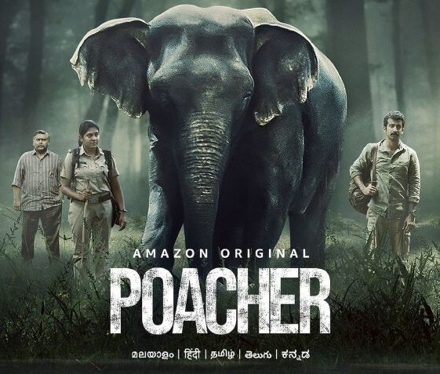

Director: റിച്ചി മേത്ത
Review by: ഷിജിൽ എം പി
ആമസോൺ പ്രൈം റിലീസ് ചെയ്ത വെബ് സീരീസാണ് Poacher (ആനവേട്ടക്കാരൻ). ഈ മാസം Feb 23 നാണ് റിലീസ് ചെയ്തത്.
ആനവേട്ടയും അതിനോടനുബന്ധിച്ച ആനക്കൊമ്പ് മാഫിയയും ആണ് പ്രമേയം. ആനവേട്ട എങ്ങനെ ഒരു വനത്തിൻ്റെ സന്തുലിതാവസ്ഥയെ താളം തെറ്റിക്കുന്നു എന്ന് വ്യക്തമാക്കിത്തരുന്നു. കാടിനെ സ്നേഹിക്കുന്നവർക്കും അതിനെ അറിയാനാഗ്രഹിക്കുന്നവരും തീർച്ചയായും കാണുക. വളരെ മനോഹരമായി ഒരു വനത്തിൻ്റെ ഗാംഭീര്യവും മനോഹാരിതയും വന്യജീവികളുടെ തനതായ സൗന്ദര്യവും ഒപ്പിയെടുത്ത സീരീസ്. വേട്ടക്കാരുടെ പുറകെ പോയി ഡൽഹി കേന്ദ്രീകരിച്ചുള്ള മാഫിയയിലേക്ക് എത്തുന്ന അന്വേഷണ പരമ്പര ആയതിനാൽ ഒട്ടും ബോറടിക്കില്ല.
ഇതിന് എട്ട് എപ്പിസോഡുകളുണ്ട്. ഓരോ എപ്പിസോഡും 45 മിനിറ്റിനടുത്ത് ദൈർഘ്യമുണ്ടാവും. നിമിഷ സജയൻ, റോഷൻ മാത്യു എന്നിവരാണ് കേന്ദ്ര കഥാപാത്രങ്ങൾ.
PAN Indian ആയതു കൊണ്ട് ഇടയ്ക്ക് ഹിന്ദി വരും. മനസിലാക്കാൻ ബുദ്ധിമുട്ടുണ്ടെങ്കിൽ മലയാളം സബ്ടൈറ്റിൽ ഉണ്ട്. ഞാൻ നോക്കുമ്പോൾ ചൈനീസ് ഉൾപ്പെടെ 36 ഓളം ഭാഷയിൽ സബ്ടൈറ്റിൽ ഉണ്ട്.